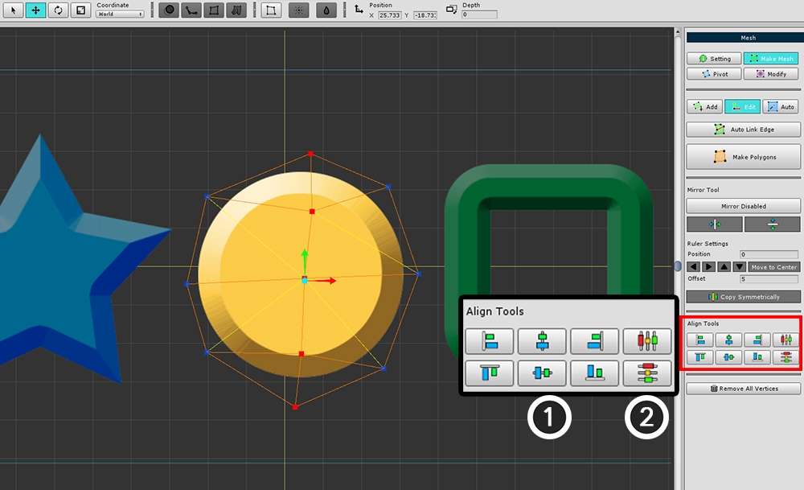
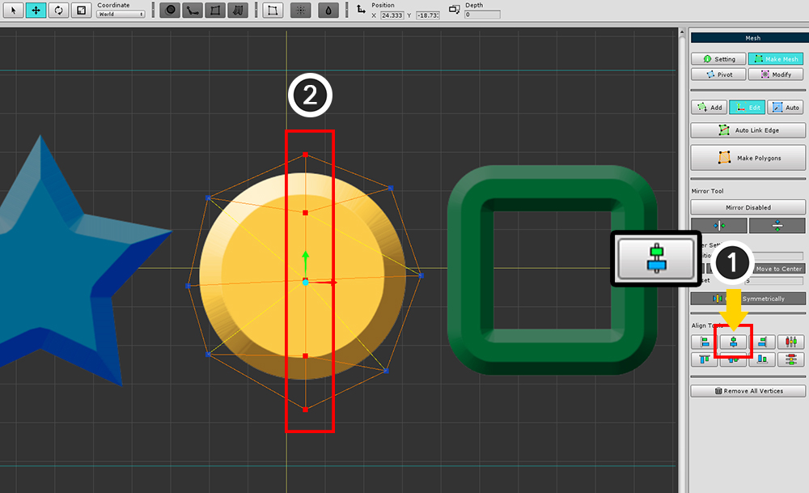
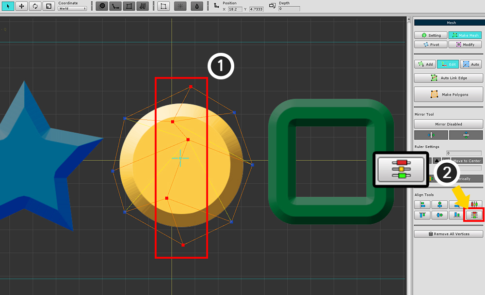

AnyPortrait > マニュアル > メッシュの編集
メッシュの編集
1.1.0
メッシュを作成する従来のツールは、頂点を1つずつ選択して修正、追加、削除することです。
メッシュの頂点を変更したいときは、これはちょっと面倒なことがあります。
このページでは、複数の頂点を選択して編集する方法について説明します。

(1) メッシュを選択します。
(2) 「Make Mesh」タブを選択します。
(3) 「Edit」タブを選択します。
「Edit」タブを選択すると、頂点を選択して編集できます。
下のUIは、メッシュを作成するツールと同じツールで、ミラーツールを含みます。
ミラーツールについては、関連ページを参照してください。

「移動」ツールを選択すると、頂点を移動できます。(ショートカット : W )

「回転」ツールを選択すると、頂点を回転させることができます。(ショートカット : E )

「スケール」ツールを選択すると、頂点のサイズを変更できます。(ショートカット : R )
FFDツールの使用

画面上部のFFDツールを使用することができます。
頂点を選択し、FFDツールをオンにして形状を変換してから、「適用」または「元に戻す」ボタンを押します。
頂点を揃え

「整列(Alignment)」ツールが追加されました。
(1) 頂点の位置を等しくする。
(2) 頂点の間隔を等しくし、頂点を再配置する。

(1) 「X座標を中央に合わせる」ボタンを押すと、
(2) 頂点のX位置が同じになるように変更する。


(1) 頂点を選択し、(2) 「Y座標を均等に配分」ボタンを押します。
頂点の間隔が一様に再配置されていることが分かります。